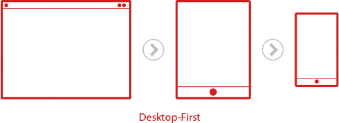

Desktop First 방식을 사용할 경우 문제점
CSS를 불러올 때 브라우저는 첫번째 줄부터 마지막 줄까지 순차적으로 읽는다. 이 때 Desktop First 방식을 사용할 경우 모바일 사용자는 Desktop 코드를 모두 읽고 난 후에야 Mobile 코드를 읽어 화면에 출력하게 된다. 이럴 경우 데이터를 사용하는 모바일 사용자는 데이터를 낭비하게 된다.
hover 기능은 마우스를 올렸을 때 작동하는 기능인데 Mobile에서는 마우스를 올린다는 개념이 없기 때문에 hover의 효과를 어떻게 대처해야 하는지를 다시 한번 고려해야 한다.
Mobile First 방식을 사용할 경우 좋은점
사용자의 생활 패턴은 데스크탑에서모바일로 이동한 지 오래이다. 오늘날 대부분의 사용자는 일어나자마자 모바일을 사용한다. 즉, 데스크탑보다 먼저 모바일을 사용한다는 것이다.
그렇기에 디자인 또한 모바일 먼저 진행할 필요가 있다. 디자인의 수요층이 주로 사용하는 기기 중심의 디자인을 우선 수행했을 경우...